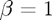

Document Title
Overview of the file.
This file was created by Brian Gaines for Eric Chi's ST790 Advanced Computing course to provide a demo for publishing code and output with markup in MATLAB.
Contents
Section 1
This is the first section. In general it's good practice to use sections in MATLAB even if you aren't publshing your code as MATLAB makes it easy to run all of the code in a section at the same time, and also to switch between sections.
To start a new line of text, there needs to be a line with "%" by itself
Section with Code
To insert a code chunk, there must first be a blank line to let MATLAB know it's not a continuation of the current block of text
Since there is a blank line (without a "%"), we can now enter a comment for the code, if desired
a = 1; % This is another comment. To switch back to document text, we need to use % "%%" or "%%%". Both of these can optionally have titles, which will show % up in the Table of Contents at the top. % % "%%" will start a new section in MATLAB, while "%%%" does not.
Now we can type text again, but we are still in the same section within MATLAB. We could also add a title if desired, which would be added to the Contents. For example
Section 3
This is a new section in our document, but it's within the same section in the Editor because we used "%%%."
Section 4
To create a new section in both our document and the code, we use "%%
Math Examples
For inline LaTeX math, we use open and close the math with "$," just like in LaTex. For example, .
Note that there can not be any space between either "$" and the math. For example, $\beta = 1 $ fails to render.
Double "$$" is used for display LaTeX math ("\display"). For example  instead of . This often looks better on its own line due to the size.
instead of . This often looks better on its own line due to the size.
Note that, if used in-line, it starts with "$$" but ends with only one "$". For math on its own line, it starts with "$$" and ends with either "$$" or "$" is fine. I do not know why this is the case.
Unevaluated Code chunks
Code chunks that are not to be evaluted can be also included by hitting the "Tab" key after the "%" that begins the line
for x = 1:10 disp(x) end
In my experience the code highlighting isn't perfect but it at least gives an option of including code that isn't evaluated.
Other formatting
Bold text with "* *"
Italic text with "_ _"
Hyperlinks "<url text>"
Bullet list with "*" on its own line, preceeded by a line with a blank comment
- point 1
- point 2
Numbered list: "#"
- item 1
- item 2